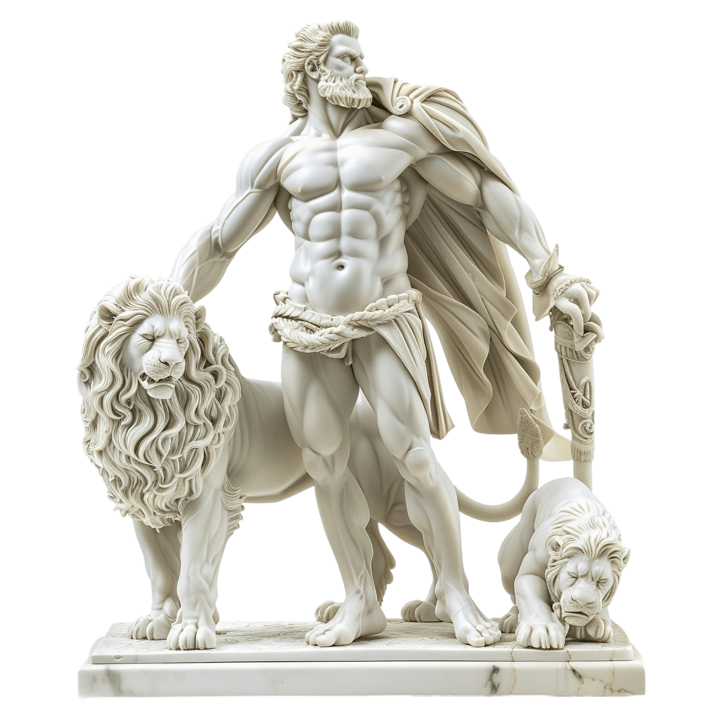

Hercules (o tambien conocdio como Heracles) es considerado como
uno de los personajes mas conocidos
de la mitologia griega por todas
las hazañas contadas en su historia.
En esta sitio web, vamos a repasar
los distintos trabajos que le han sido encargados
por Euristeo, 12 misiones
que lo pondrán a prueba para remediarse de su locura,
misma con la que
acabó con la vida de su esposa Mégara y de sus hijos.
Heracles es el héroe más célebre de la mitología griega, famoso por su fuerza sobrehumana, su valor inquebrantable y su espíritu indomable. Hijo de Zeus y la mortal Alcmena, superó constantes persecuciones divinas y realizó hazañas legendarias, entre las que destacan los doce trabajos, para ganarse la inmortalidad y un lugar en el Olimpo.
